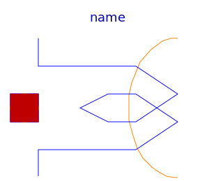
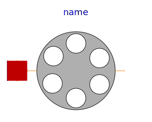
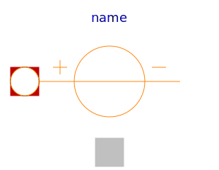
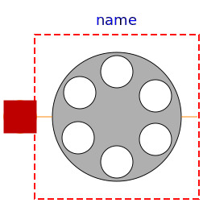

Components specially for electric machines
| Name | Description |
|---|---|
|  SinglePhaseWinding | Symmetric winding model coupling electrical and magnetic domain |
| SymmetricMultiPhaseWinding | Symmetric winding model coupling electrical and magnetic domain |
|
|
Air gap model with rotor saliency |
|
|
Symmetrical rotor cage |
|  SaliencyCageWinding | Rotor cage with saliency in d- and q-axis |
|  PermanentMagnet | Permanent magnet represented by magnetic potential difference |
|  SymmetricMultiPhaseCageWinding_obsolete | Symmetrical rotor cage |
|
|
Rotor cage with saliency in d- and q-axis |